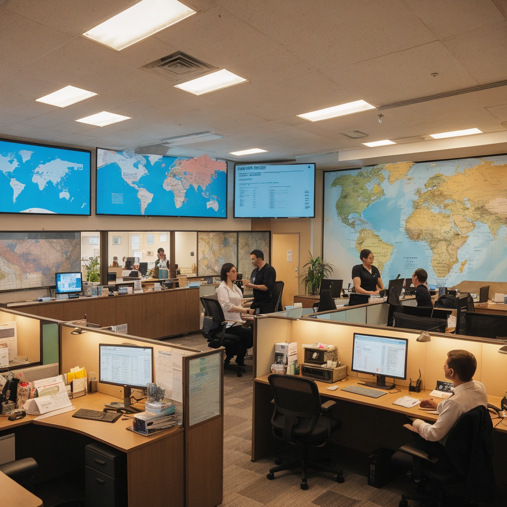

公司簡介
旅遊公司「全球探險者旅行社」成立於2010年，由一群熱愛旅遊與探險的朋友共同創立。創始人們在多次的旅行經歷中發現，儘管世界上有無數美妙的地方等待人們去探索和體驗，但許多人因為行程規劃的困難、文化差異的障礙或是安全顧慮而放棄了這些機會。
因此，他們決定成立一家旅遊公司，旨在提供量身定制的旅行服務，幫助客戶輕鬆實現他們的旅遊夢想。
「全球探險者旅行社」專注於提供高品質的旅遊服務，包括但不限於個性化旅遊定制、文化探險之旅、生態旅遊、家庭友好旅遊、奢華度假以及企業團建活動。
公司擁有一支經驗豐富的專業團隊，成員包括資深旅遊顧問、地區專家、冒險活動指導員和客戶服務專家，他們致力於為客戶提供無憂的旅行體驗，確保旅行的每一個細節都能達到客戶的期望。
公司成立之初，「全球探險者旅行社」僅提供國內旅遊服務，但隨著業務的發展和市場需求的擴大，公司逐漸拓展到國際旅遊市場，現已成為一家享譽全球的旅遊服務提供商。
公司堅持可持續旅遊的理念，努力在提供卓越旅遊體驗的同時，保護目的地的自然環境和文化遺產，並積極參與當地社區的發展。
「全球探險者旅行社」的使命是使每一次旅行都成為一次生命中難忘的探險，讓客戶在旅途中發現更多、感受更多、體驗更多。公司相信，透過旅行，人們不僅能探索世界，更能探索自我，找到內心的平靜與喜悅。
